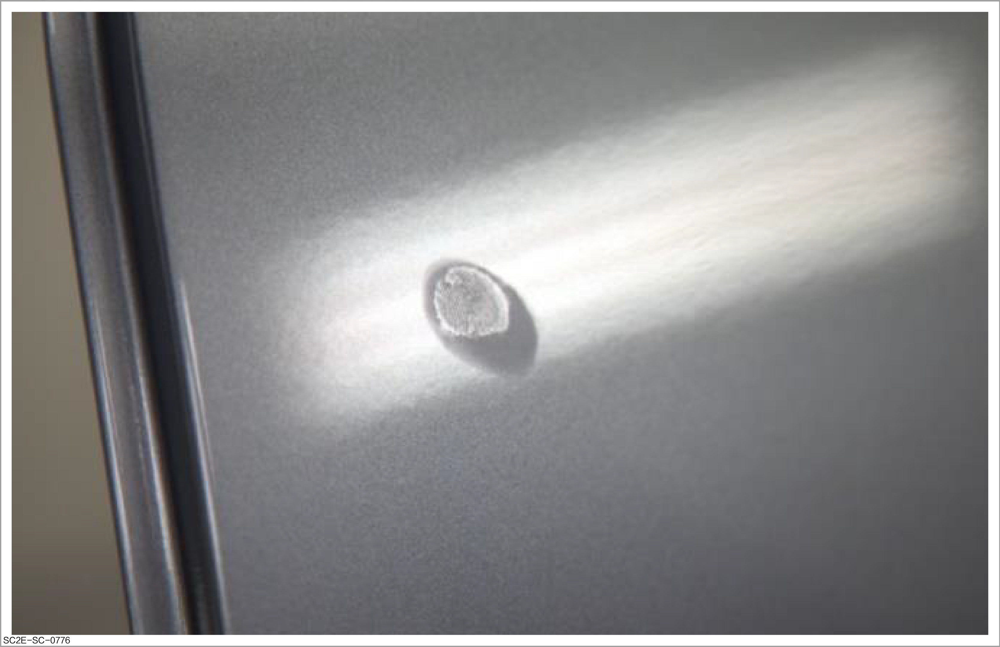
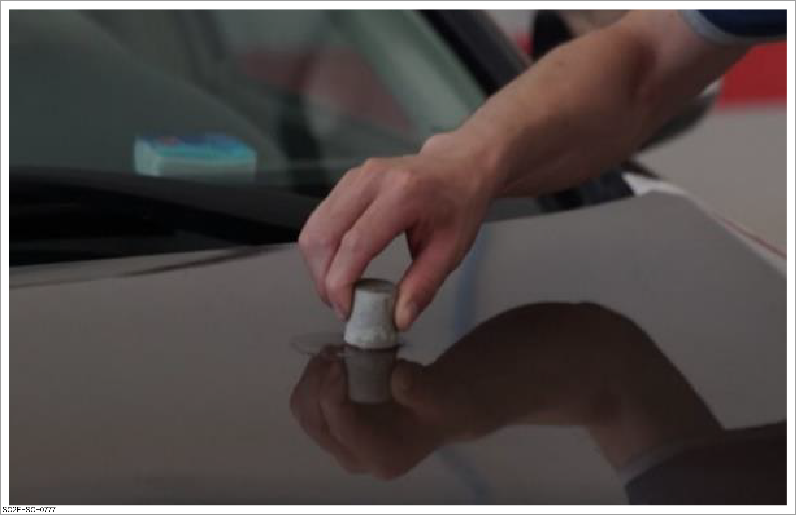
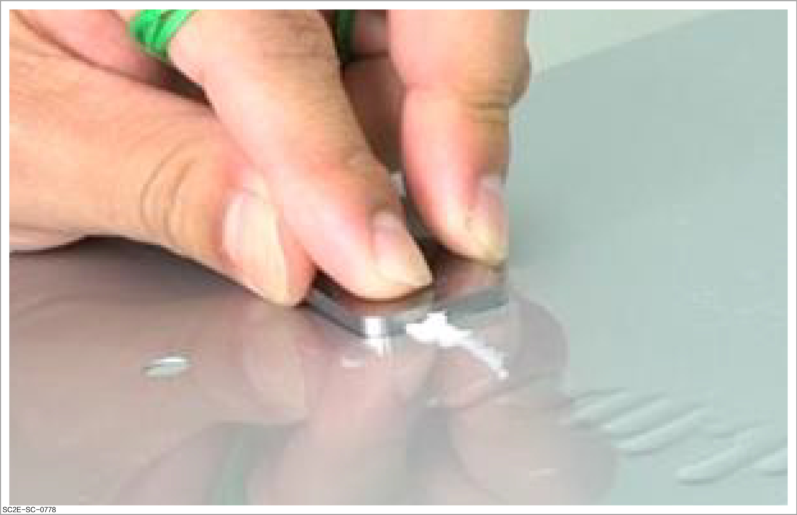
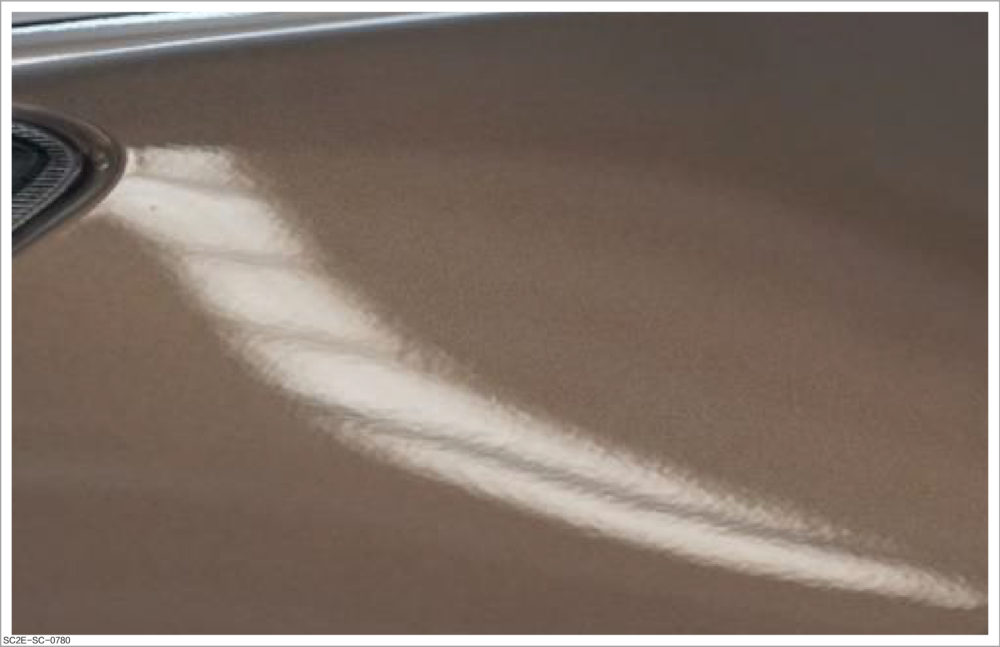
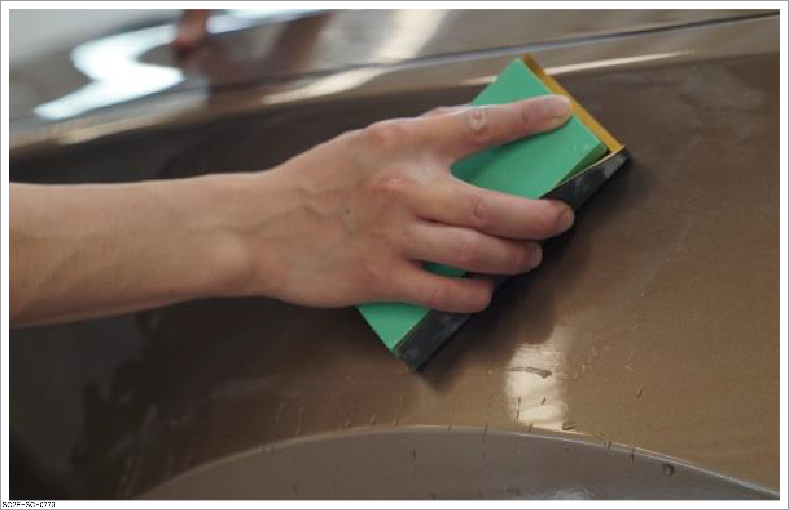
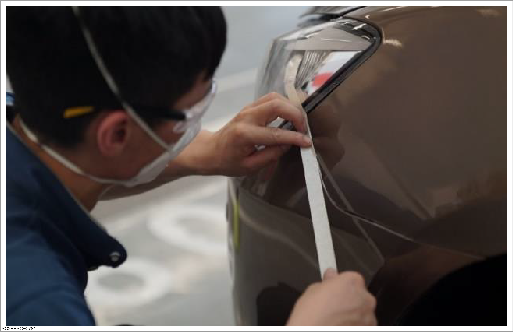
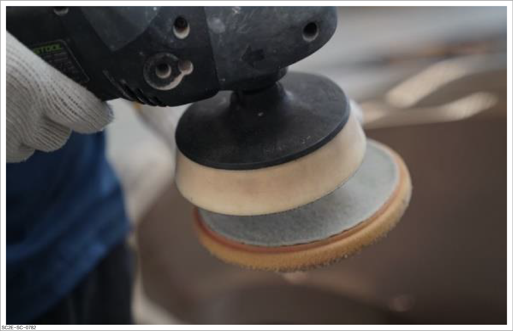
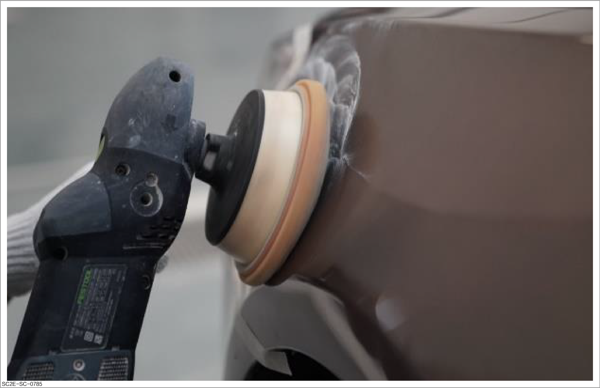
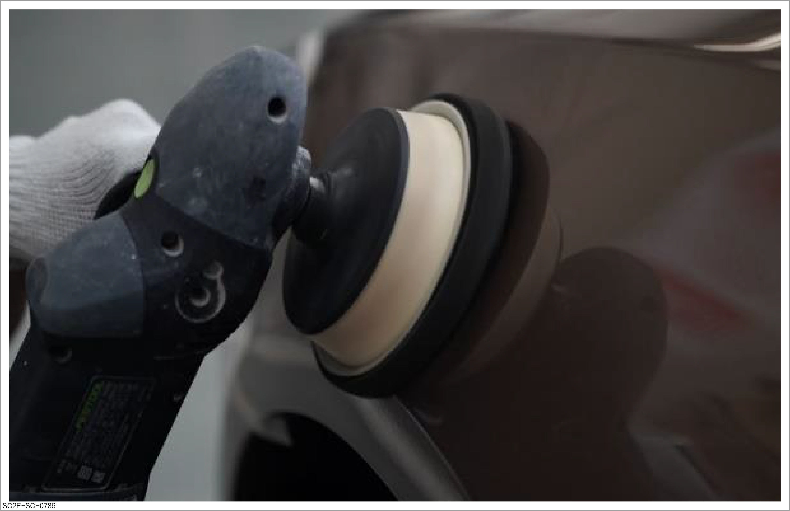
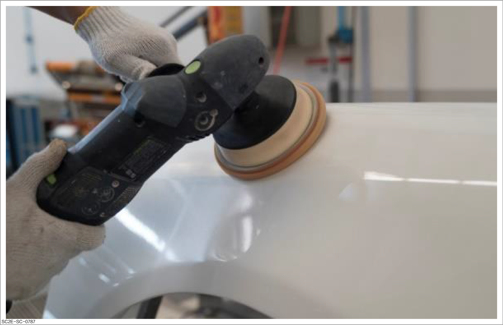

Performing polishing

-
During operation, please take safety protection measures as required. For details of safety protection, please refer to Spraying protection
-
Before operation, please carefully read and observe site safety and vehicle protection. For details, please refer to Site safety and vehicle protection
Operation method
-
Evaluation of spray-painted surface
-
Evaluating the drying state: Select a part that will not affect the overall repair quality, press the coating with fingers to determine whether the surface is sufficiently dry for polishing. If the surface is not sufficiently dry, it needs to be dried forcibly.

-
Evaluating the presence of particles: Check the paint film surface for particles. If any, determine an appropriate grinding method.
-
Spray a small amount of clean water on the painted surface in areas with particles.
-
Grind the dust spots with a rubber grinding block complete with sandpaper #1500-2000.
CautionHold the lower part of the cushion block during grinding to reduce damage to the paint film surface.

-
-
Evaluating whether the surface has sagging: If the sagging mark is obvious, use a scraper to level them first, then completely remove the sagging marks with sandpaper #1000-1500.

-
Evaluating paint film texture: If the dried surface texture is slightly rougher than that of the original paint film, wipe off dirt and dust on the steel panel with clean wiping paper, and manually grind the corresponding area with a wet grinding pad equipped with sandpaper #1500-2000.
CautionTo prevent sandpaper from being blocked, use water for grinding. During grinding, keep the grinding block at an angle of 45° to the grinding direction to prevent scratches.
Abnormal texture:

Grinding technique:

-
-
Masking the adjacent areas of polishing areas that are susceptible to contamination or damage
CautionTo prevent inhalation of fine dust and particles generated by polishing, wear dust masks, safety goggles and safety shoes during polishing.
Reminder
This step can be ignored if the masking after spraying on the vehicle body is not removed.

-
Selecting the appropriate polishing pad: Select the polishing pad based on the polishing range of the panel and install it in the center of the polishing machine to prevent the machine from shaking.
ReminderClean the polishing pad before use to remove all dirt. If there is a large amount of dry wax or dirt on the surface of the polishing pad, it will cause scratches on the paint film for polishing.
ReminderUse a small polishing machine for spot grinding with a polishing pad as the vehicle body surface is curved and the defective area is usually small.

-
Rough polishing: Use a polishing machine equipped with a wool pad or white sponge wheel to roughly polish the painted surface, to remove sandpaper marks caused by adjusting texture or removing particles and paint sagging. Operation instructions:
CautionPay special attention to ridge lines, edges, corners and zones above the plane. Those locations are easily accessible during polishing, causing the paint film to be ground through.
-
Clean the surface of the panel, install the rough polishing pad, evenly apply polishing wax on the polishing pad, and adjust the speed of the polishing machine to 1000-1500 r/min.
-
Place the polishing pad flat on the paint surface and start the polishing machine to move back and forth regularly along the horizontal direction for polishing. Refer to Principle and essentials
-
Ensure that all sandpaper marks generated during repair are removed and the surface has the same texture as the adjacent paint coating.

-
-
Fine polishing: Use a polishing machine equipped with a fine polishing sponge pad to remove swirl marks generated during rough polishing to create gloss.
Caution-
Ensure that all swirl marks generated during rough polishing in the area after the operation are removed and the surface has the same texture and glossiness as the adjacent steel panel.
-
Select suitable ultra-fine polishing wax.
-
Use the auxiliary color mixing light to check whether the swirl mark still exists. Perform glazing if the swirl mark still exists.

-
-
Polishing blend area: Use fine polishing pads and polishing wax to polish the blend area to ensure that the edges of the blend area are free of roughness or coating delamination at its edges. Operation instructions:
-
If the edges of the blend area are significantly rough, use a wool pad and ultra-fine polishing wax.
-
When polishing, move the polishing machine from the repainted surface to the original surface, and properly adjust the angle of the polishing machine so that the rotation direction of the polishing pad rotates from the repainted surface to the original surface.

-
-
Glazing: Use a dual-action polishing machine equipped with a sponge pad to remove the swirl mark (halos) generated during fine polishing to restore the gloss of coating. Operation instructions:
CautionEnsure that all swirl marks generated during rough polishing in the area after the operation are removed and the surface has the same texture and glossiness as the adjacent steel panel.